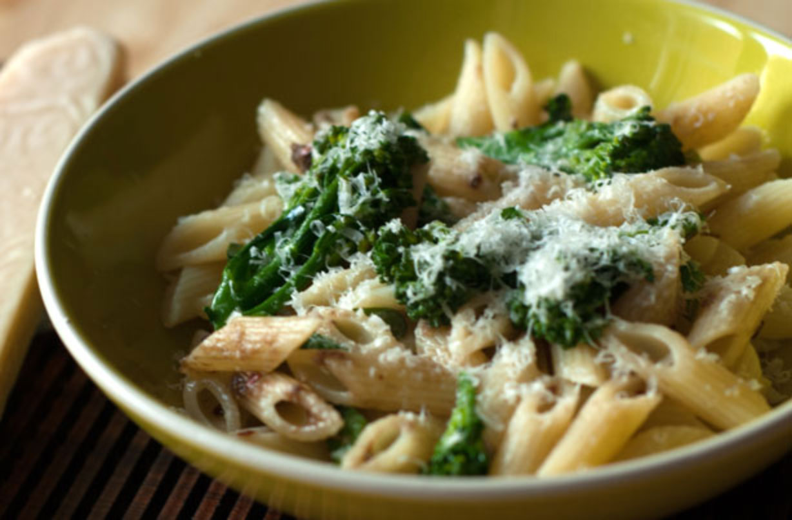

Penne Broccoli

Description
Try our recipe for penne with broccoli and salmon for some of us and this acidic sauce that really brings the dish together.
Ingredients
- Penne Rigate
- A Broccoli
- Salmon (optional)
- Soya Sauce
- Lemon Juice
- Olive Oil
- Salt
- Pepper
Recipe
- Prepare the broccoli by cutting the fleurettes individually
- Blanche the broccoli
- Bring a pot of salted water to a boil
- Add the pasta and cook for as long as recommended
- At this stage, prepare the salmon strips, if you're using it in the recipe
- Once the pasta is cooked, remove from water and place back in the pot with broccoli and salmon, off the heat
- Add the olive oil, lemon juice, soya sauce and pepper to taste
- Lightly stir to mix the sauce in, without breaking the fleurettes and the salmon
- Serve Hot!